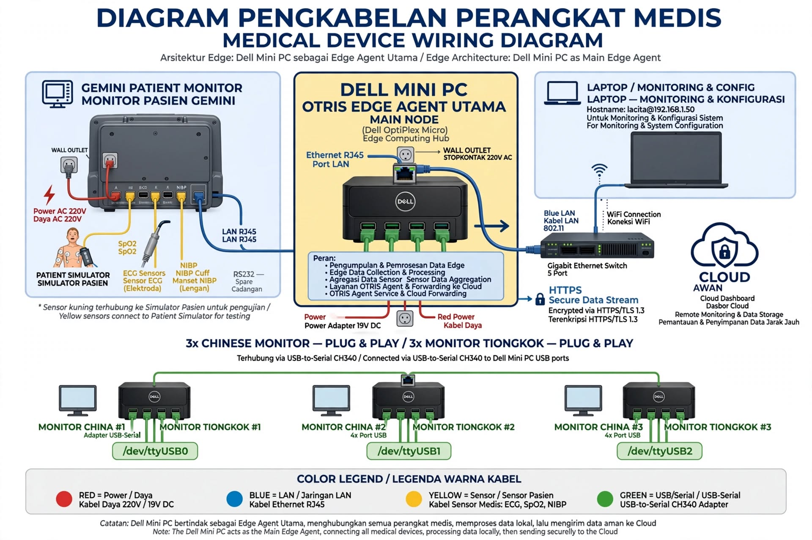

Plug & Play dalam Lingkungan Teknologi Medis
Menjelajahi konsep integrasi perangkat, gateway, protokol, dan proses validasi teknis.

Engineering Insights | OTRIS Technology
Menjelajahi konsep integrasi perangkat medis, Edge Gateway, protokol komunikasi, dan validasi teknis untuk membangun ekosistem rumah sakit yang lebih terhubung.
Ketika Perangkat Medis Berbeda Harus Bekerja Bersama
Di ruang operasi, ICU, dan berbagai unit pelayanan rumah sakit, perangkat medis sering berasal dari produsen yang berbeda. Patient monitor, ventilator, infusion pump, mesin anestesi, dan perangkat pendukung lainnya dapat memiliki antarmuka serta protokol komunikasi yang tidak sama.
Perbedaan tersebut merupakan salah satu tantangan dalam membangun sistem informasi klinis yang terintegrasi.
Rumah sakit telah berinvestasi pada berbagai perangkat medis yang masih berfungsi dengan baik. Karena itu, integrasi teknologi seharusnya tidak selalu dimulai dengan mengganti perangkat yang sudah tersedia.
OTRIS dikembangkan dengan prinsip Integration Over Replacement — mengintegrasikan sebelum mempertimbangkan penggantian.
Pendekatan ini menjadi dasar pengembangan konsep Plug & Play dalam lingkungan teknologi medis.
Apa Arti Plug & Play dalam Teknologi Medis?
Pada perangkat elektronik konsumen, Plug & Play sering berarti perangkat langsung berfungsi setelah dihubungkan.
Namun, dalam lingkungan medis, pengertiannya lebih kompleks.
Setiap perangkat dapat memiliki karakteristik komunikasi, format data, identitas, serta persyaratan keselamatan yang berbeda. Karena itu, perangkat yang berhasil terhubung secara fisik belum tentu siap digunakan sebagai sumber data klinis.
Dalam arsitektur OTRIS, Plug & Play merupakan pendekatan integrasi yang dirancang untuk menyederhanakan proses pengenalan, konfigurasi, pemetaan, dan validasi perangkat.
Tujuannya bukan menghilangkan proses pemeriksaan teknis, melainkan menjadikannya lebih terstruktur, terukur, dan dapat diaudit.
Plug & Play bukan berarti Plug & Trust.
Sebuah perangkat harus dikenali dan divalidasi sebelum datanya dapat dipercaya untuk digunakan dalam sistem klinis.
Peran OTRIS Edge Gateway
OTRIS Edge Gateway dirancang sebagai lapisan penghubung antara perangkat medis dan sistem digital rumah sakit.
Gateway berperan dalam menerima komunikasi dari perangkat yang kompatibel, memproses data sesuai adapter dan protokol yang didukung, serta meneruskannya ke sistem OTRIS melalui struktur data yang konsisten.
Pendekatan ini memungkinkan integrasi dilakukan tanpa mewajibkan semua perangkat berasal dari satu vendor.
Beberapa teknologi dan jalur komunikasi yang menjadi bagian dari pendekatan integrasi OTRIS meliputi:
HL7: pertukaran pesan dan informasi kesehatan.
FHIR: representasi dan pertukaran sumber daya informasi kesehatan.
RS-232/RS-485: jalur komunikasi serial yang masih digunakan oleh sejumlah perangkat.
TCP/IP: komunikasi melalui jaringan komputer.
DICOM: standar pertukaran informasi dan pencitraan medis.
WebSocket dan WebRTC: teknologi komunikasi dan distribusi informasi real-time pada lapisan aplikasi.
Masing-masing teknologi memiliki fungsi yang berbeda. Tidak semua perangkat mendukung seluruh protokol tersebut, dan dukungan protokol tidak dengan sendirinya menjamin kompatibilitas.
Dari Koneksi Fisik Menuju Data Terintegrasi
<text color="secondary" weight="medium">Alur konseptual integrasi OTRIS</text>
Device Connection — Perangkat medis dihubungkan melalui antarmuka yang tersedia dan sesuai.
Device Discovery — Sistem atau engineer mengidentifikasi perangkat, koneksi, dan indikasi protokol yang digunakan.
Classification & Mapping — Identitas perangkat, karakteristik data, dan parameter yang relevan dipetakan.
Canonical Normalization — Data yang dapat diproses diterjemahkan ke struktur data internal OTRIS yang konsisten.
Technical Validation — Engineer melakukan pemeriksaan kompatibilitas, ketepatan pemetaan, konektivitas, dan integritas data.
Operational Approval — Perangkat yang telah memenuhi persyaratan dapat disetujui untuk penggunaan sesuai kewenangan dan prosedur rumah sakit.
Alur ini merupakan model arsitektur dan proses integrasi yang dituju OTRIS. Implementasi aktual pada setiap perangkat tetap bergantung pada adapter, protokol, hasil pengujian, dan persetujuan operasional.
Mengapa Canonical Data Penting?
Bayangkan dua patient monitor dari produsen berbeda mengirimkan informasi denyut jantung menggunakan struktur pesan yang berbeda.
Tanpa lapisan normalisasi, sistem penerima harus memahami format setiap perangkat secara terpisah.
OTRIS menggunakan pendekatan Canonical First, yaitu mengubah data yang berhasil dibaca dan dipetakan menjadi representasi internal yang konsisten.
Dengan pendekatan ini, komponen sistem di atasnya tidak harus bergantung langsung pada format komunikasi masing-masing vendor.
Namun, normalisasi tidak boleh menghilangkan konteks penting seperti sumber data, satuan pengukuran, waktu, identitas perangkat, dan status validitasnya.
Konsistensi data harus berjalan bersama keterlacakan.
Keselamatan Pasien Tetap Menjadi Prioritas
Dalam lingkungan medis, keberhasilan koneksi bukan satu-satunya ukuran keberhasilan integrasi.
Data yang salah dipetakan, terlambat diterima, kehilangan satuan, atau berasal dari perangkat yang keliru dapat menimbulkan risiko.
Karena itu, arsitektur OTRIS menempatkan validasi teknis, audit trail, kontrol akses, dan pengelolaan status perangkat sebagai bagian penting dari proses integrasi.
Prinsip yang harus dijaga adalah:
Tidak ada perangkat yang otomatis dipercaya hanya karena berhasil terdeteksi atau terhubung.
OTRIS dirancang untuk mendukung tenaga medis dan operasional rumah sakit, bukan menggantikan keputusan klinis ataupun tanggung jawab profesional mereka.
Menuju Rumah Sakit yang Lebih Terhubung
Masa depan integrasi teknologi kesehatan bukan semata-mata tentang menghadirkan lebih banyak perangkat baru.
Tantangan yang lebih penting adalah bagaimana perangkat, tenaga medis, sistem informasi, dan infrastruktur yang telah tersedia dapat bekerja bersama secara aman dan berkelanjutan.
Melalui pendekatan vendor-agnostic, Edge Gateway, canonical data, dan proses validasi yang terstruktur, OTRIS membangun fondasi menuju interoperabilitas perangkat medis yang lebih terbuka.
Pengembangan dan pengujian tetap menjadi bagian dari perjalanan tersebut. Kompatibilitas harus dibuktikan untuk setiap jenis perangkat dan skenario penggunaan, bukan hanya dinyatakan sebagai janji teknologi.
OTRIS — Bridging Care. Empowering People.
Integration Over Replacement. Canonical First. Audit First.
Catatan Editorial
Artikel ini menjelaskan prinsip arsitektur dan pendekatan rekayasa OTRIS. Penyebutan teknologi, protokol, serta kategori perangkat tidak berarti seluruh perangkat telah tersertifikasi kompatibel atau siap digunakan secara klinis. Implementasi memerlukan pengujian, validasi, dan persetujuan sesuai prosedur yang berlaku.
